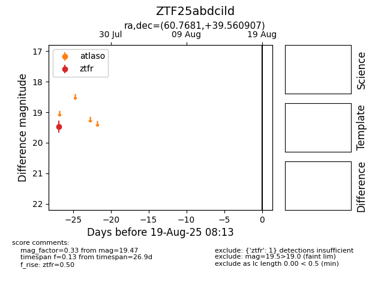

Target ZTF25abdcild at 2025-08-06 17:27, see:
FINK: fink-portal.org/ZTF25abdcild
Lasair: lasair-ztf.lsst.ac.uk/objects/ZTF25abdcild
ALeRCE: alerce.online/object/ZTF25abdcild
alt names
ZTF25abdcild (ztf,fink)
coordinates:
equatorial (ra, dec) = (60.7681,+39.56091)
galactic (l, b) = (158.4179,-9.75941)
photometry
last ztfr=19.47
1 ztfr detections
